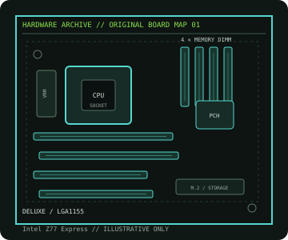

[ INDIVIDUAL COMPONENT // MOTHERBOARDS ]
ASUS P8Z77-V Deluxe
Intel Z77 / LGA1155 ATX board with four DDR3 DIMMs and multi-slot PCIe 3.0 expansion; CPU fit is BIOS-qualified. This is a dedicated model record; revision, CPU and firmware qualifications are documented below.

IDENTIFICATION: Verify the printed model and PCB revision against manufacturer support files before selecting a processor, memory kit, firmware image or replacement board. Similar names can describe electrically different products.
Specifications
| Catalog subcategory | Enthusiast Intel platforms |
|---|---|
| Exact board / revision | P8Z77-V Deluxe |
| Platform / era | Intel Sandy Bridge / Ivy Bridge enthusiast desktop, 2012 |
| CPU socket / compatibility | LGA1155; 2nd-generation Intel Core, Pentium and Celeron processors and 3rd-generation Intel Core families, subject to ASUS CPU list and required BIOS. |
| Chipset | Intel Z77 Express |
| Memory | Four dual-channel DDR3 DIMM sockets; up to 32 GB of non-ECC, unbuffered memory. Faster XMP/overclocked settings depend on CPU and DIMM configuration. |
| Expansion slots | Three PCIe x16-length slots: two CPU-connected slots share lanes (x16 or x8/x8), and one chipset-connected slot is wired up to x4; four PCIe x1 slots. |
| Form factor | ATX, approximately 305 × 244 mm; confirm case/standoff support and PCB dimensions in the manufacturer manual. |
| Storage / I/O | Four SATA 6 Gb/s and four SATA 3 Gb/s ports, plus model-specific eSATA and USB 3.0; consult the manual for controller and port-sharing details. |
| Firmware and validation | Use only firmware for this exact model and revision. Confirm the selected CPU in the manufacturer CPU support table and satisfy its stated minimum BIOS; consult the board manual and memory QVL for DIMM placement, shared lanes and port limitations. |
Compatibility and revision notes
ATX (305 × 244 mm). Use the ASUS CPU support list and minimum BIOS for the exact processor; do not infer compatibility from LGA1155 fit alone. The board is DDR3-only. Check the manual for PCIe sharing, SATA controller assignments, power connectors, memory population and chassis clearance.
Physical socket fit, chipset family or a matching module notch does not independently guarantee compatibility. Confirm the exact CPU, BIOS release, memory type/capacity, slot wiring, device protocol and board dimensions in the manufacturer documentation before building or servicing a system.
Preservation and repair
Record the full PCB model, revision and BIOS identifier before maintenance. Inspect socket contacts, DIMM/PCIe connectors, VRM area and electrolytic components; document any corrosion, rework or missing hardware. Use ESD-safe handling and follow the manual’s clear-CMOS procedure.
For an archive record, photograph labels and connector condition before cleaning. Do not cross-flash firmware from a similar model or revision, and never power a board with loose conductive hardware beneath it.
Manufacturer sources
- ASUS — P8Z77-V DELUXE manuals and specificationsOfficial manufacturer product/manual documentation for this exact model.
- ASUS — P8Z77-V DELUXE CPU support listOfficial manufacturer CPU/firmware/support reference; confirm the board marking and revision.
Specifications and compatibility can vary with PCB revision, regional SKU, processor stepping and BIOS. Consult the linked manufacturer support material for the exact board.